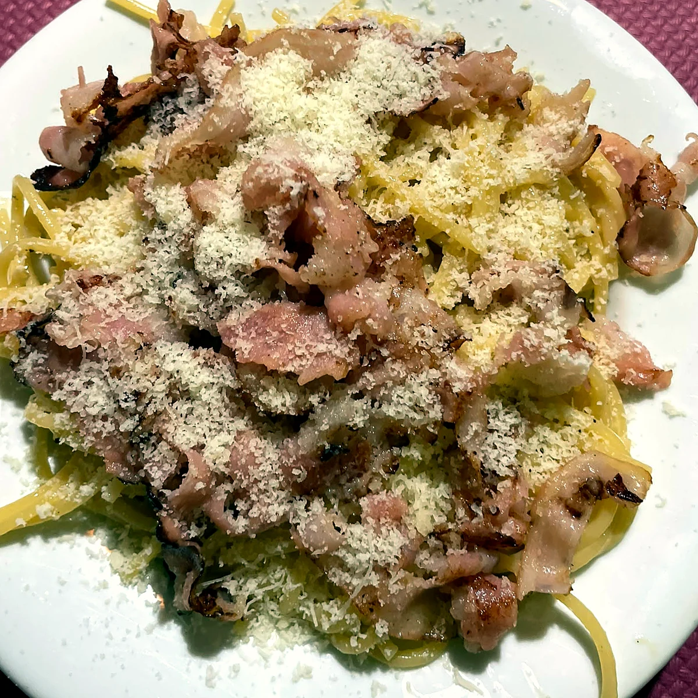
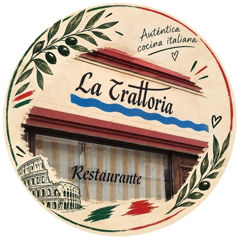
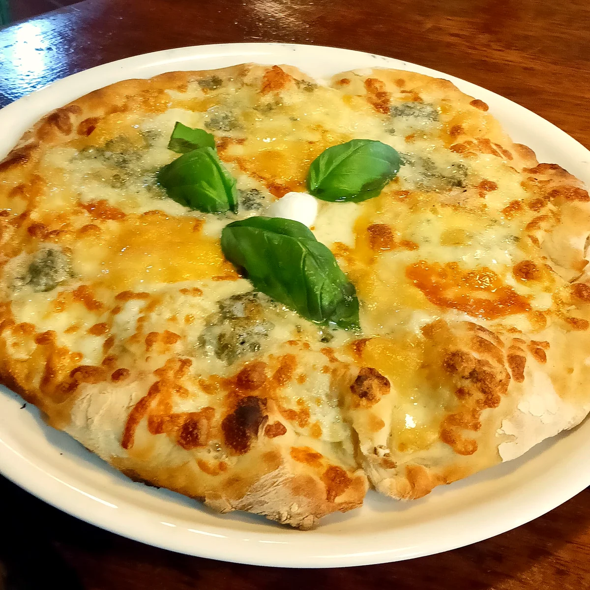
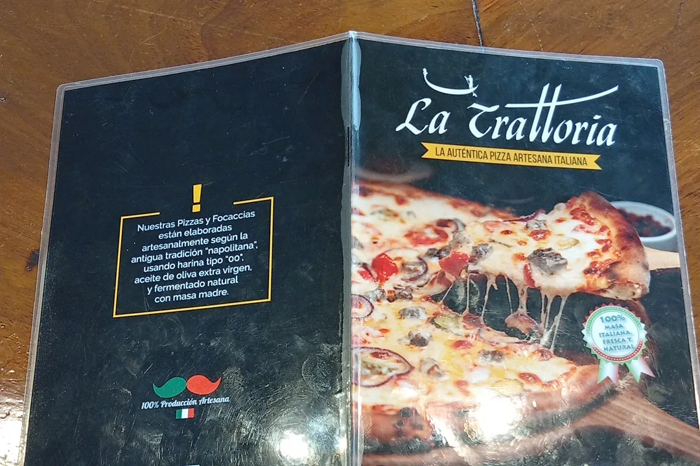
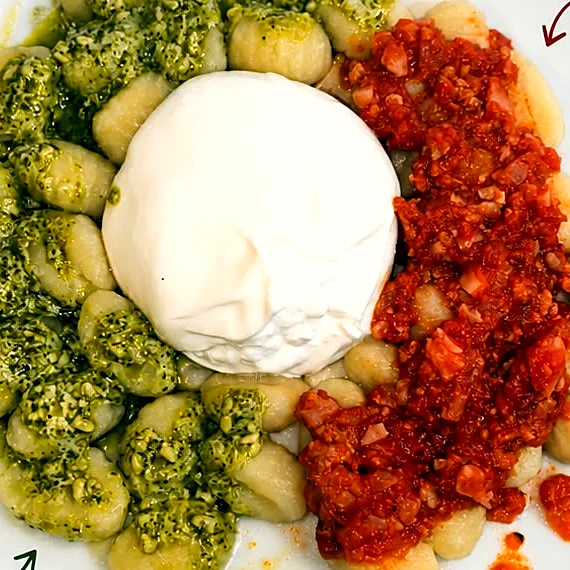
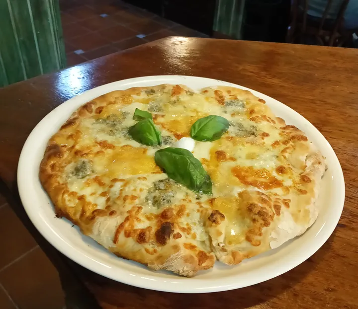
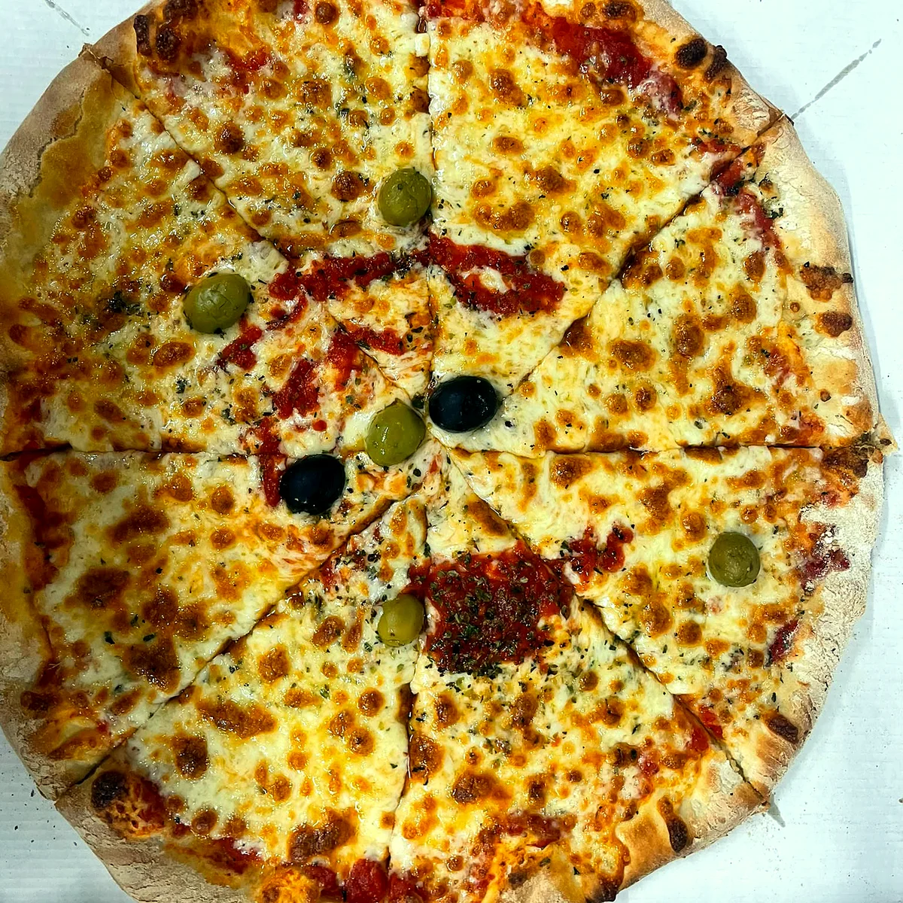

Muy pedida
Spaghetti carbonara
Con beicon y lluvia de parmigiano.

La Trattoria Consultando horario… Reservar
Pizzería · Bar · Casco antiguo de O Barco
Pizzas y focaccias artesanas según la tradición napolitana, en la rúa San Mauro. Te las llevamos a casa, para recoger o para comer aquí.
4,3 · 232 reseñas en GoogleIl segreto
Nuestras pizzas y focaccias se elaboran a mano, según la antigua tradición napolitana. Sin prisas: la masa fermenta con masa madre hasta que está lista.

Los imprescindibles
Lo que nuestros clientes repiten, según sus reseñas en Google.

Con beicon y lluvia de parmigiano.

Pesto genovés, tomate italiano y burrata cremosa en el centro.

Mozzarella, queso azul, parmigiano y emmental.
La carta
Toda la carta con sus precios. ¿Te apetece en casa? Haz tu pedido en nuestra página de pedidos y te lo llevamos.
Hacer mi pedidoPizza sin gluten con los ingredientes que elijas. El precio va según los ingredientes: pregúntanos.

A domicilio y para llevar
Sin apps de reparto ni registrarte. Eliges en la carta, nos llega el pedido al momento y ves en tu móvil cuándo sale del horno y cuándo llega.
Cumpleaños, eventos y momentos especiales
Ambiente acogedor y familiar, menús personalizados para cada celebración y atención cercana. Tú solo preocúpate de disfrutar: nosotros del resto.
Cuéntanos tu celebraciónReservar mesa
Elige cuántos sois, el día y la hora. Te sale el mensaje hecho para WhatsApp y te confirmamos.
El local
En la rúa San Mauro, en pleno casco antiguo de O Barco. Terraza en la calle, barra para tomar algo y un comedor tranquilo para cenar sin prisa. Y si vienes haciendo el Camino de Invierno, aquí hay pizza.
Horario
Martes cerrado por descanso.